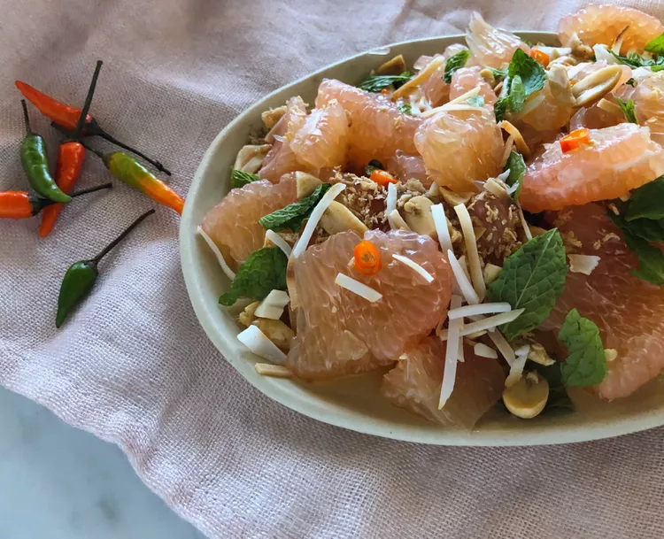

Recipe 1: Pomelo Salad

Pomelo Salad
Description
It may take some effort to peel pomelo, but
I love the mildly sweet flesh. It's so much better
than grapefruit, in my opinion! I was inspired to try
it in a Thai-style salad that was a
little sweet and a little sour
with hints of spice and funk. Enjoy!
Ingredients
- 2 tsp unsweetened coconut flakes
- 1 pomelo
- 2 tsp fried shallots
- and more!!
Steps
- Cook and stir coconut in a dry skillet over medium-low heat until toasted and fragrant, 3 to 5 minutes. Set aside.
- Cut top and bottom off the pomelo, about 1/2 inch from each side. Make vertical cuts around the fruit, about 1/2 inch into the rind. Pull off slices of rind. Pull off any thick pieces of membrane. Split fruit open and separate into segments. Peel membrane off each slice.
- Place pomelo slices in a shallow bowl. Sprinkle toasted coconut, peanuts, shallots, and mint on top.
- Combine hot water and palm sugar in a jar. Stir until sugar dissolves. Whisk in lime juice, fish sauce, and chile pepper. Spoon dressing over salad.